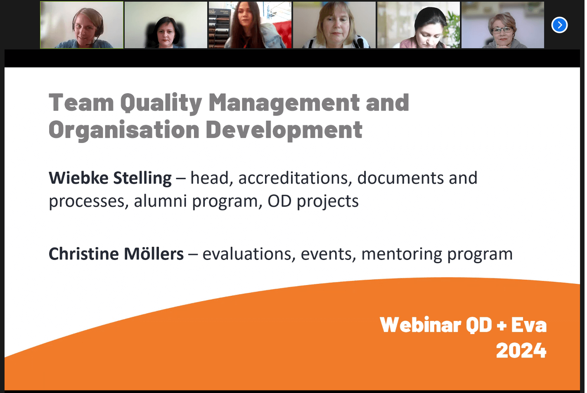
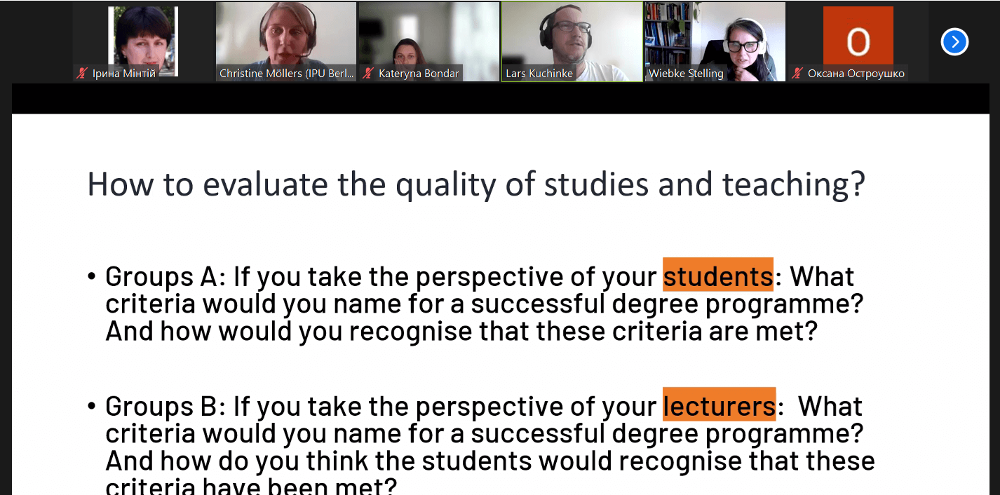
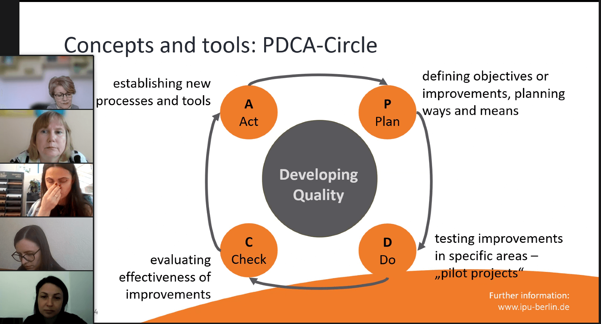
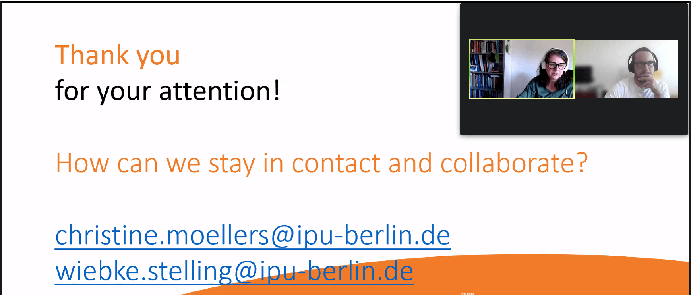

Webinar 4 "Course Evaluation" at International Psychoanalytic University Berlin GmbH (May 14, 2024)
On May 14th, the International Psychoanalytic University Berlin GmbH in Germany hosted a webinar titled "Course Evaluation at IPU Berlin". The webinar featured speakers Lars Kuchinke and Phil Langer from the Team Quality Management and Organisation Development, along with Wiebke Stelling, head of accreditations, documents, and processes, as well as the alumni program and OD projects, and Christine Möllers, responsible for evaluations, events, and the mentoring program, led the discussion.
The breakout session focused on evaluating the quality of studies and teaching from different perspectives:
- Group A: Participants considered the perspective of students and discussed criteria for a successful degree program. They also explored how students could recognize when these criteria are met.
- Group B: Participants took the perspective of lecturers, identifying criteria for a successful degree program from their point of view. They also speculated on how students would recognize the fulfillment of these criteria.
Each group engaged in short breakout sessions for 10 minutes, followed by a 5-minute discussion in the plenum.
After the breakout sessions, participants shared and discussed their opinions on evaluating the quality of studies and teaching. The exchange likely provided valuable insights and perspectives from both students and lecturers, contributing to ongoing efforts to enhance the educational experience.
